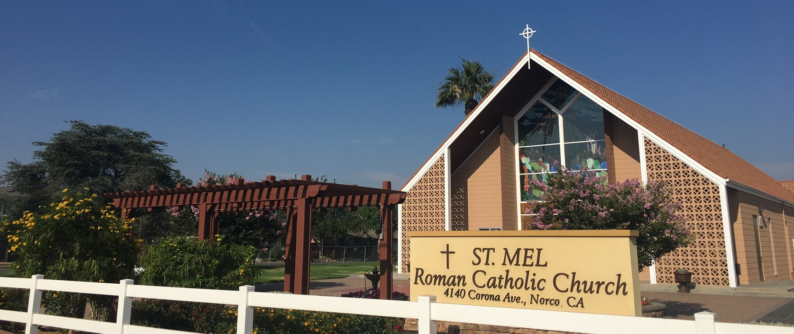
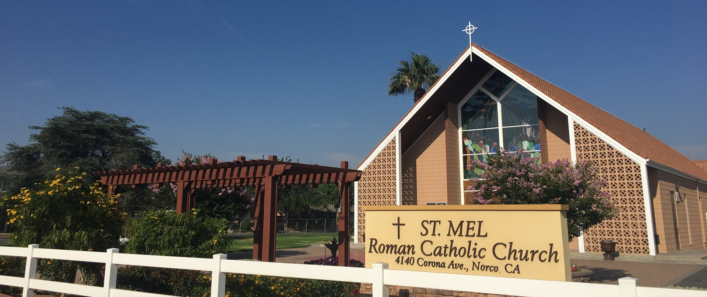
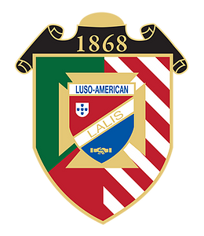
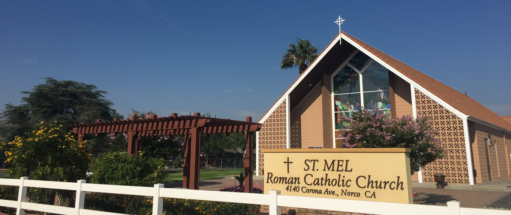
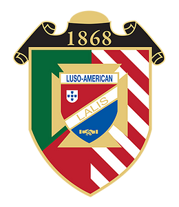

Tomas Alves
Hello, my name is Tomas Alves. I am a full-time student at the University of California, Riverside where I am studying to complete a Bachelor’s degree in Political Science: International Affairs. I also currently work part-time as a Student Server at the Glasgow Dining Facility on the UCR campus where I serve other students and carry out other vital tasks to ensure that my company’s mission statement is fulfilled. Later, in my career, my dream is to become a political journalist and become a defender of the truth while writing stories that enlighten the public about the world. This passion of mine stems from my accomplishments in Government and History courses in high school but also to prove myself as a firm supporter of the truth in the face of misinformation and confusion. Some of my accomplishments include receiving the Howmet Aerospace $4,000 scholarship, the Luso-American Youth Education $1000 scholarship, and my Golden-Sealed High School Diploma indicating Academic Excellence throughout my four years of high school.
I was good at history. I knew that. But I had never been truly tested until I got to High School in a new environment where there wasn't much familiarity. Even with all my struggles in my first course in High School history, I had believed that my grades would follow suit if I just focused on chasing the knowledge. In this way I had finally affirmed my passion for learning more about the world with statistical confirmation through the score of a test. This first taste of satisfaction had inspired me to promise myself to always challenge my abilities in the coming years by taking the highest levels of history available since I had proved myself on a stage that was quite daunting. I never thought that this single accomplishment would be credited for so much of my passion for learning about others and their perspectives but since that day I decided to chase this passion even further by constantly feeding myself knowledge of every form of media from news and documentary to article and artifact. As my High School career progressed, I found myself taking lots of opportunities to develop my interests in history, namely the National History Day project within my class but also participating in a mock trial to argue for or against the ancient Mongols. Out of guilt, I had raised my hand to be the leading defense attorney but even though I made this decision without the responsibilities in mind, I had no doubt that it was meaningful to lead a group of my peers. This happened in sophomore year, but I was able to carry this over the course of my time in High School culminating in my Senior year where I had cemented my success in previous courses developing a newfound confidence that would fuel a mock campaign to feed my interests of studying politics in my last year of High School. And then my teacher said, as the election results were tallied, "Tomas, you're the President my man!" "Oh my gosh!" I said with butterflies of joy in my stomach.
My passion to achieve at the highest levels comes from my determination and promise to become a role model and have a real impact on others.
Experience
Student Server
• Assigned various different jobs around dining facility
• Help to ensure that customers have a safe, enjoyable dining experience
• Intereact with chefs, supervisors and other student servers to develop teamwork skills
Volunteer at St. Mel's Catholic Church
• Organizing food baskets for community distribution
• Delivered food donations to different families in community to fulfill Church's mission
Delegate
• Ran sessions to facilitate and review events hosted by youth council
• Reported different events held by council at the 2019 Youth Convention
• Hosted events in the community like: Trunk-or-Treat, Christmas Potluck, and various car washes
Education
UC Riverside
Portfolio
 



